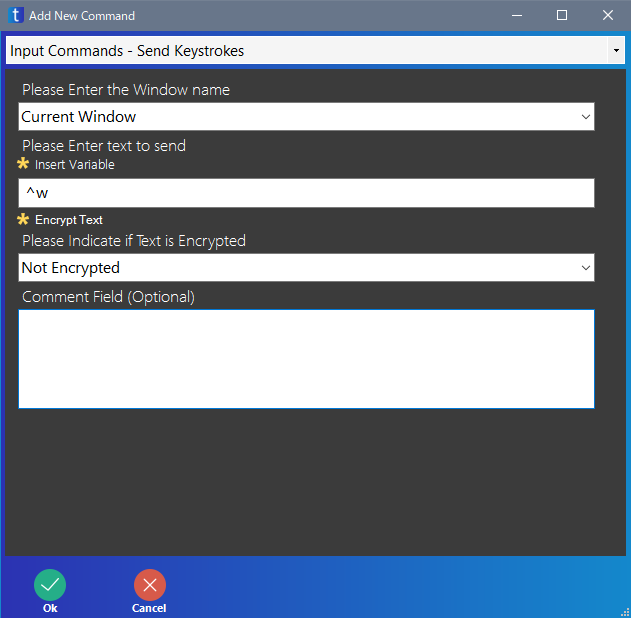

ソフト・画面を閉じる
taskt でソフトや画面を閉じるには Close Window 命令があります。
しかし、別の方法として Send Keystrokes 命令で、ソフト・画面を閉じるショートカットキーを入力する方法があります。
Windows のショートカットとして Alt+F4 がソフト・画面を閉じるショートカットキーです。
また、多くのソフトで Ctrl+W が閉じるショートカットです。
そのため、Send Keystrokes 命令を下のように指定することで、現在のソフト・画面を閉じることができます。


補足ですが、Excel やブラウザーなど、taskt の別の命令で実行したソフトは、Close Window 命令や Send Keystrokes 命令で閉じない方が良いと思います。
たとえば、Excel ならば Create Excel Application 命令で実行し、Close Excel Application 命令で閉じてください。
ブラウザーなら、Create Browser 命令で実行し、Close Browser 命令で閉じてください。